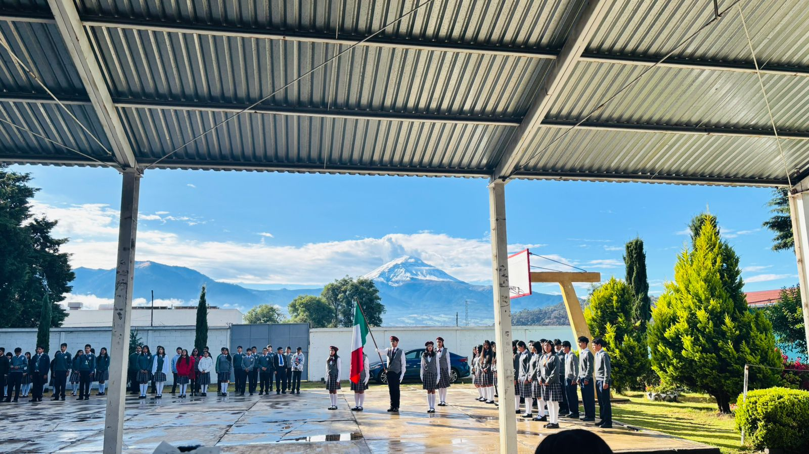
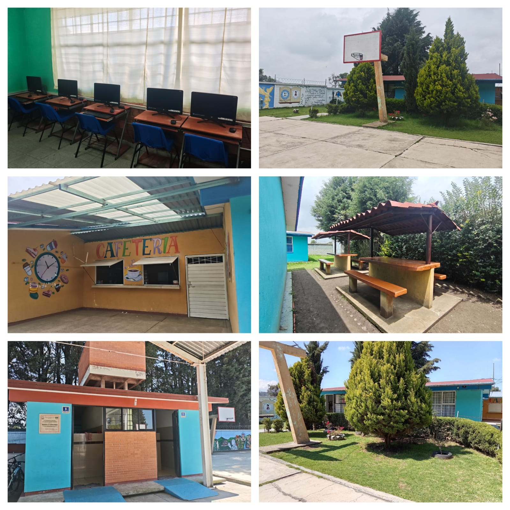
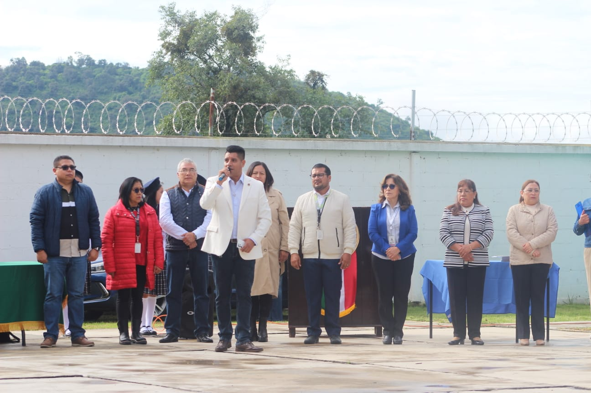
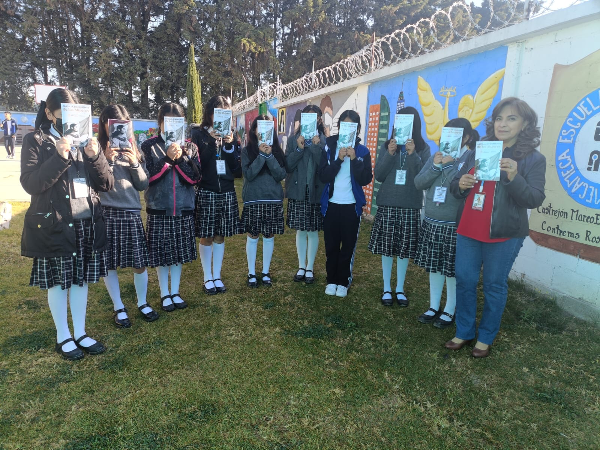
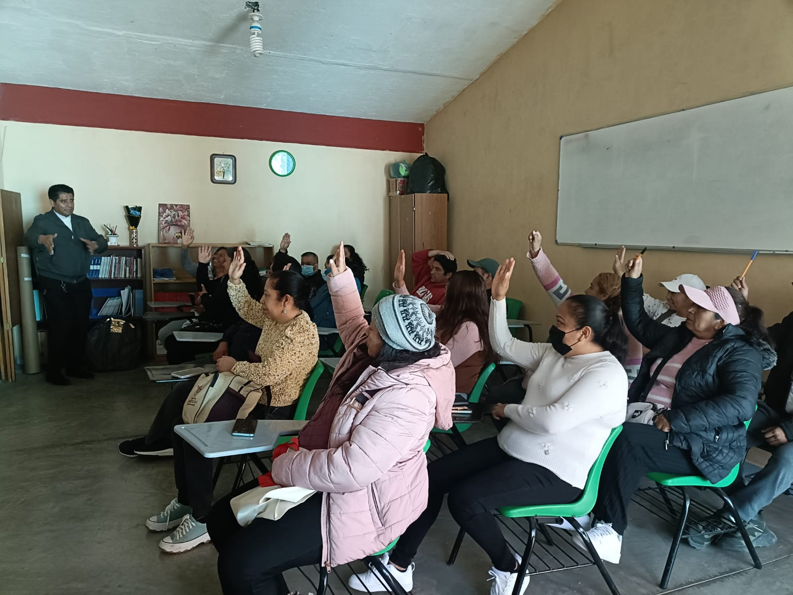

Nuestra institución tiene el compromiso de brindar una educación integral, formando estudiantes responsables, participativos y preparados para enfrentar los retos académicos, sociales y tecnológicos del presente y del futuro.

La Escuela Telesecundaria No. 0103 "Juan Aldama" cuenta con más de cuatro décadas de experiencia formando generaciones de estudiantes en la comunidad de San Francisco Zentlalpan, Amecameca, Estado de México.
Nuestro objetivo es proporcionar una educación de calidad basada en valores, disciplina, respeto y compromiso social, favoreciendo el desarrollo académico, emocional y humano de cada alumno.

Somos una institución comprometida con el aprendizaje, el bienestar y la formación integral de nuestros estudiantes.
Espacios adecuados para el aprendizaje.
Personal capacitado y comprometido.
Formación humana y social.
Contamos con instalaciones que favorecen el aprendizaje y la convivencia:

Nuestra plantilla docente cuenta con amplia experiencia en atención a adolescentes.
Todos nuestros maestros cuentan con la preparación y los conocimientos para impartir los contenidos de la educación secundaria.

Promovemos actividades académicas, culturales y deportivas que fortalecen las habilidades de nuestros alumnos.
Además, fomentamos el trabajo colaborativo, el liderazgo y la participación en eventos escolares y comunitarios.

La escuela promueve actividades complementarias que permiten desarrollar habilidades prácticas, artísticas y sociales.
Los estudiantes aprenden la elaboración de diferentes tipos de postres y repostería básica, desarrollando habilidades culinarias, creatividad, trabajo en equipo y normas de higiene en la preparación de alimentos.
Promueve el aprendizaje de técnicas básicas de aplicación y decoración de uñas Gelish, fomentando la creatividad, la precisión, el emprendimiento y el desarrollo de habilidades relacionadas con la estética y el cuidado personal.
Tiene como finalidad enseñar el uso responsable y seguro de aplicaciones digitales y redes sociales, fortaleciendo las competencias tecnológicas, la comunicación digital y la ciudadanía responsable en internet.
Fortalece los valores cívicos, la disciplina, la coordinación y el trabajo en equipo mediante la práctica de toques reglamentarios de tambor y corneta en ceremonias y eventos escolares.
Los alumnos desarrollan habilidades artísticas mediante la decoración y personalización de prendas y materiales textiles, utilizando diversas técnicas de pintura que fomentan la creatividad y la expresión visual.
Desarrolla habilidades musicales a través del aprendizaje de instrumentos de cuerda y técnicas de interpretación vocal, fomentando la sensibilidad artística, la convivencia y el gusto por la música.

Personal comprometido con el acompañamiento académico y emocional de los estudiantes, favoreciendo el aprendizaje y la inclusión educativa.
Espacio destinado a fortalecer la comunicación familiar mediante talleres, charlas y actividades de orientación para madres, padres y tutores.

Se realizan conferencias y actividades sobre salud, prevención de adicciones, convivencia escolar, cuidado del medio ambiente y proyecto de vida.
Las visitas escolares permiten reforzar los aprendizajes mediante experiencias directas en museos, sitios históricos, instituciones educativas y espacios culturales.
Asiste a la escuela del 9 al 20 de febrero de 2026 con copia de los siguientes documentos.
Después deberás estar al pendiente en el mes de marzo para ingresar a la plataforma de SAID y realizar tu elección en línea.